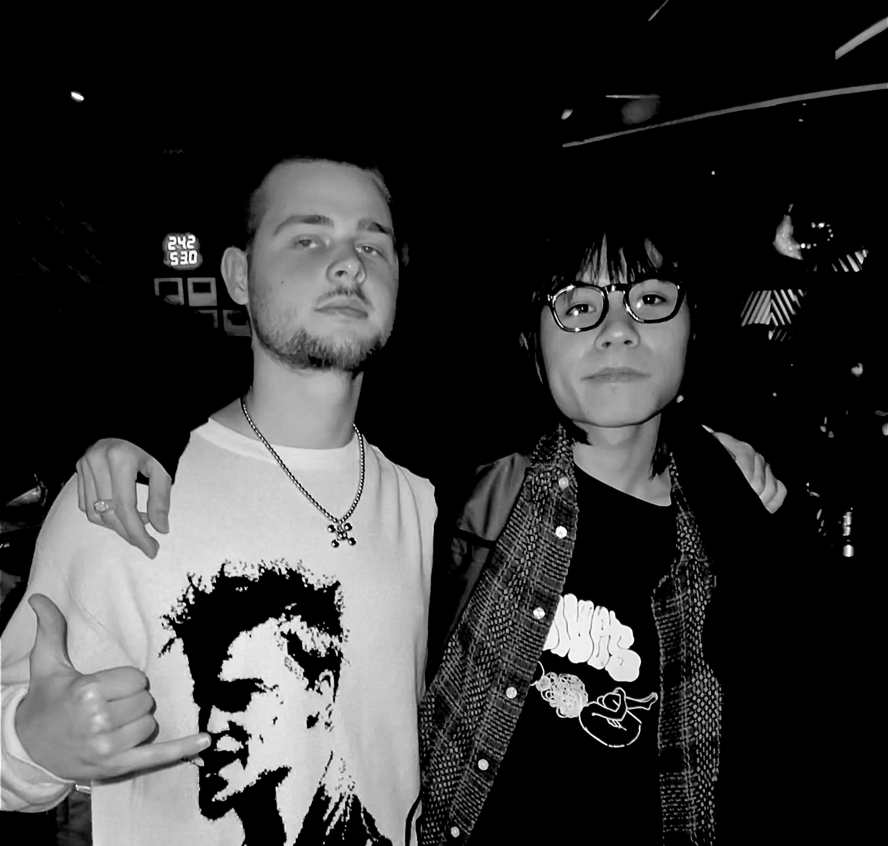
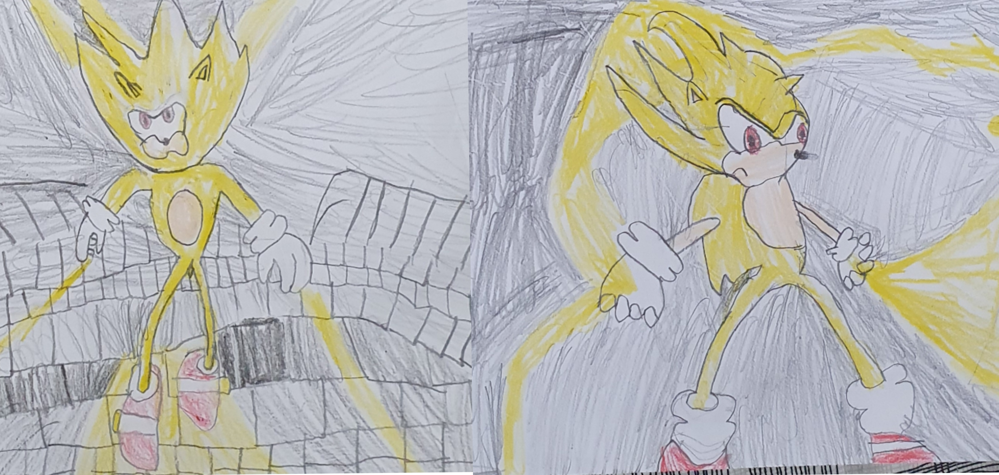

How did I become
an artist?
Allow me to begin at the inception of my artistic journey. From a young age, I harbored an unwavering passion for creating artworks, a sentiment that continues to thrive within me. To this day, I possess my collection of drawings meticulously preserved from my early childhood in 2009 when I was six years old.

Displayed here is a captivating self-portrait created in an animated style, serving as anonther example of my artistic prowess. Throughout my early years, I immersed myself in a vast selection of animated shows, including beloved classics such as Tom & Jerry, One Piece, Dragonball Z, Sonic X, and more. These shows continue to serve me as a well of inspiration, fueling my artistic endeavors to this day.
 Inspiration is the lifeblood of my creative journey, serving as the driving force behind my progress as an illustrator. Speaking of inspiration, there are four people that had a huge influence on me and my art: Aya Takano, Kanye West, Takashi Murakami, and Jun Inagawa, who I was fortunate enough to meet in Japan :) From the dynamic and expressive character designs to the meticulous composition of my artworks, the influence of animated shows and Japanese culture can be felt, lending a unique and captivating essence to my artistic expressions.
Presented here is one of my earliest artistic creations. During that period, I was a huge Sonic fanatic and often drew him. I know these drawings looks goofy, but I'm glad that I still own these because I can always self-reflect and see how I improved. Self-reflection is the greates art of progression.
My journey of improvement in drawing has been a testament to perseverance, dedication, and a burning passion for artistic expression. Through countless hours of practice and a steadfast commitment to honing my skills, I have witnessed a tangible evolution in my abilities. Starting from humble beginnings, I embarked on a continuous quest for knowledge, studying the fundamentals of drawing, anatomy, and perspective. With each passing day, I find myself armed with greater confidence, honed technical skills, and an unwavering belief in the transformative power of art.
During that period, I devoted myself to daily drawing sessions, utilizing every available moment to refine my skills. As time progressed, I found myself in need of replenishing my art supplies, causing a pivotal realization. This thought resonated within me: "How cool it would be to possess an endless amount of pens so I do not have to buy new ones!" This childhood aspiration took a sudden turn when I stumbled upon the realm of digital art equipment while researching the best tools available. The discovery of a digital drawing tablet sparked a remarkable idea, propelling my artistic journey forward at an accelerated pace.

This is one of my first digital art drawings. Embracing the digital realm as my 'new piece of paper', I embarked on a transformative journey of growth and improvement. Initially navigating the intricacies of digital tools and software, I immersed myself in countless hours of experimentation, familiarizing myself with digital brushes, layers, and various techniques unique to this medium.
Fueled by the supportive online art community, I gained the confidence to showcase my creations on social media like Twitter, allowing my art to reach a broader audience. The positive response and attention received from fellow artists and enthusiasts (homage to Dyvblo for supporting me since day one) provided the much-needed affirmation and encouragement to further refine my skills and dive deeper into my artistic exploration. As my online presence grew, I seized the opportunity to leverage my newfound recognition and began receiving commissions, transforming my passion into a rewarding professional endeavor. I am grateful for the journey that led me to this point and excited to continue expanding my digital art repertoire while connecting with a diverse range of clients who appreciate and value my unique artistic vision.
Through unwavering determination and countless hours of dedicated practice, I witnessed a rapid improvement in my digital art skills. The passion that fueled my creative pursuits soon transformed into tangible success as I began receiving more and more commissions. With each commission completed, I saved my earnings, setting aside funds to invest in the tools of my dreams: An Ipad with Procreate.
Creating illustrations for DJs, musicians and artists has been an exhilarating and fulfilling experience, allowing me to merge my love for art with the dynamic world of music. As a passionate artist, I seized the opportunity to collaborate with these talented individuals, translating their music into captivating visual expressions.
With great anticipation, I can't wait for the future prospects that this art journey holds for my life. I embrace the commitment to continuous improvement, dedicating myself to honing my craft with each passing day.